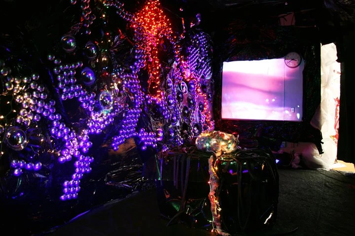
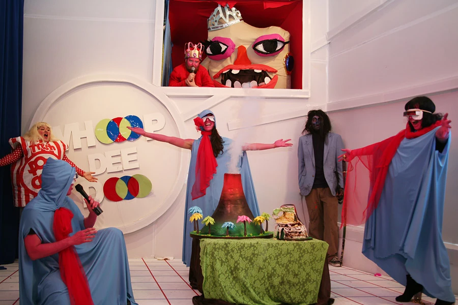

CF / Collaborative work
Whoop Dee Doo
Environments made together.
Selected project documentation, presented separately from the independent visual work.

Installation / Portland / 2011
TBA installation
A room for the brain.
An interactive environment made through Whoop Dee Doo for the Time-Based Art Festival. Found materials, colored light, and projected memories turn a room into an imagined interior of the body.
View the project
Live show / Baltimore / 2012
Baltimore show
A set becomes a gathering.
Three photographs of a Whoop Dee Doo show: the performance, the audience, and the room in use.
View the project